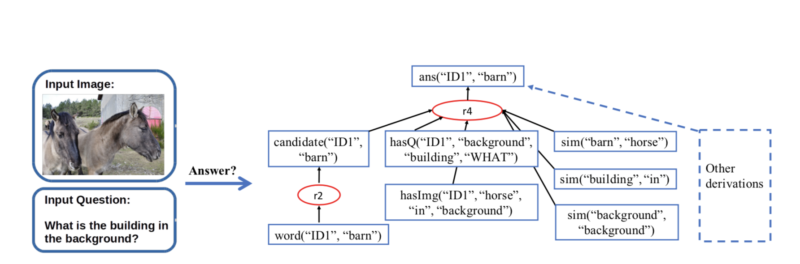

|
Xinyi Chen Ph.D. Student Department of Computer and Information Science University of Pennsylvania E-mail: cxinyic at seas.upenn.edu Github: cxinyic CV (August 2020) |
About Me
I'm a first-year Ph.D. student at the University of Pennsylvania working with Prof. Vincent Liu. My research interests include both databases and distributed systems. Currently, I am focusing on fine-grained fault tolerance in big data systems.I got my bachelor degree from Shanghai Jiao Tong University and was a member of Advanced Network Laboratory (ANL).
Publications
- Understanding the Effect of Data Center Resource Disaggregation on Production DBMSs
Qizhen Zhang, Yifan Cai, Xinyi Chen, Sebastian Angel, Ang Chen, Vincent Liu, Boon Thau Loo
International Conference on Very Large Data Bases, VLDB 2020 [To appear]
- Provenance for Probabilistic Logic Programs
Shaobo Wang, Hui Lyu, Jiachi Zhang, Chenyuan Wu, Xinyi Chen, Wenchao Zhou, Boon Thau Loo, Susan B. Davidson, Chen Chen
International Conference on Extending Database Technology, EDBT 2020 (Best paper Award) - R2-Tree: An Efficient Indexing Scheme for Server-Centric Data Center Networks
Yin Lin, Xinyi Chen, Xiaofeng Gao, Bin Yao, Guihai Chen
International Conference on Database and Expert Systems Applications, DEXA 2018
Education
- Ph.D. student: Sept. 2019 - present
University of Pennsylvania
Computer and Information Science (CIS)
- Bachelor: Sept. 2015 - June 2019
Shanghai Jiao Tong University
Computer Science, School of Electronic Information and Electrical Engineering (CS)
- Summer research intern: Jul. 2018 - Oct. 2018
University of Pennsylvania
Computer and Information Science (CIS)
Supervisior: Prof. Boon Thau Loo
Selected projects
- DBMS in Disaggregated Data Center (DDC)
Resource disaggregation is the new trend in data centers where compute, memory and storage node are separated and be connected by high speed network. There has not been a thorough evalution on the performance effects of DDC with data intensive applications. We run two popular open-source DBMSs, which are MonetDB and PostgreSQL and compare it with single-machine Linux. We find that there are significant performance degradation in disaggregation data center when running DBMS. Based on the finding, we propose some optimization methods. - Provenance for Probabilistic Logic Programs

We propose a novel provenance model called P3 for analyzing probabilistic logic programming (PLP) programs. P3 enables different kinds of queries: traditional explanation queries, queries for finding the set of most important derivations within an approximate error, top-K most influential queries, and modification queries that enable us to modify tuple probabilities with fewest modifications to program or input data. We apply these queries into real-world scenarios and the evaluation results show that the system can maintain provenance and execute queries efficiently with low overhead.
Awards & Honors
- Zhiyuan Honors Scholarship in Shanghai Jiao Tong University (top 5% in SJTU)
- Tung Scholarship in Shanghai Jiao Tong University (top 7 in computer science department)